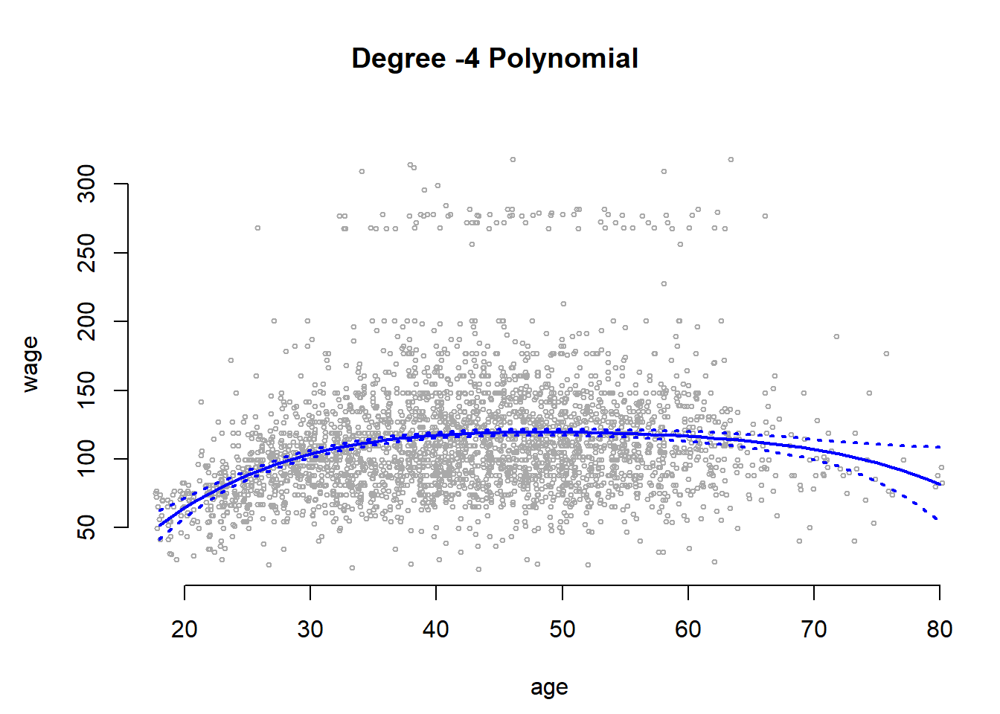
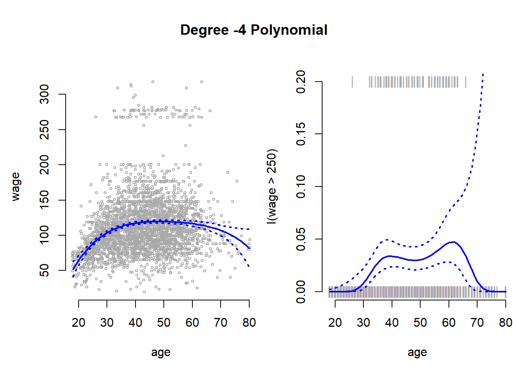
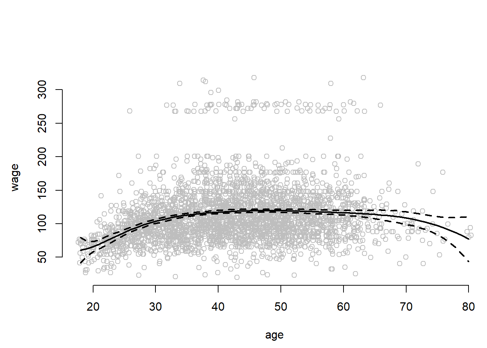
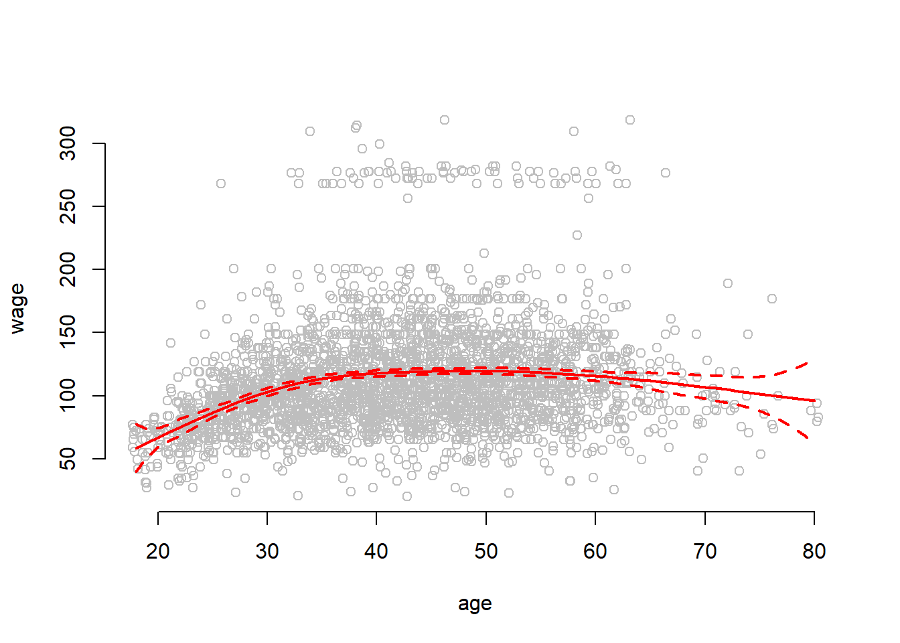
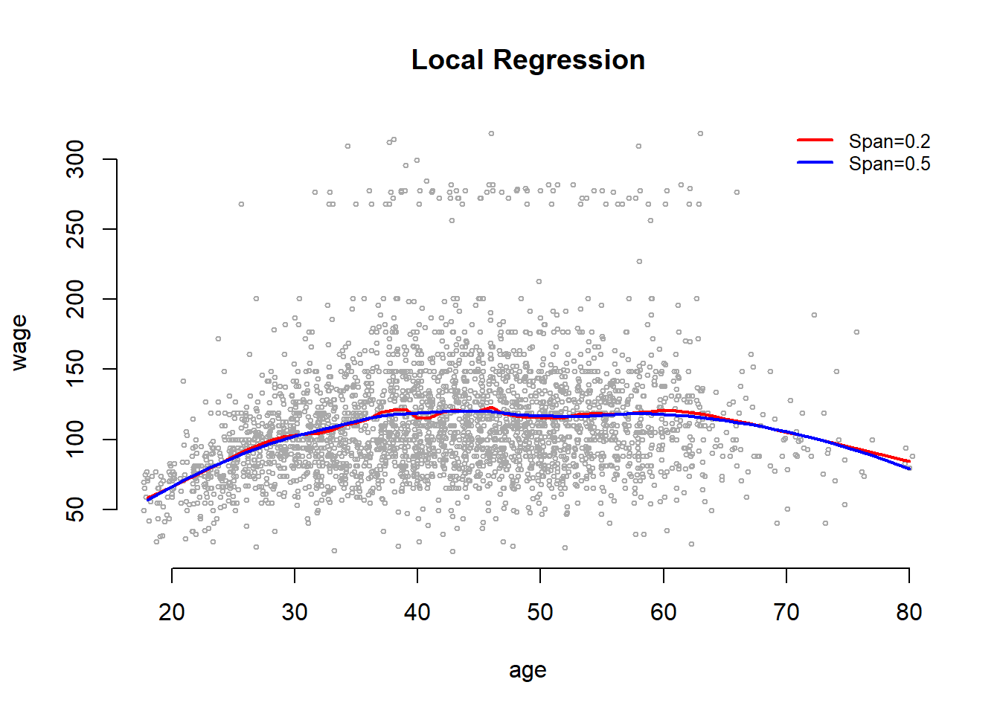
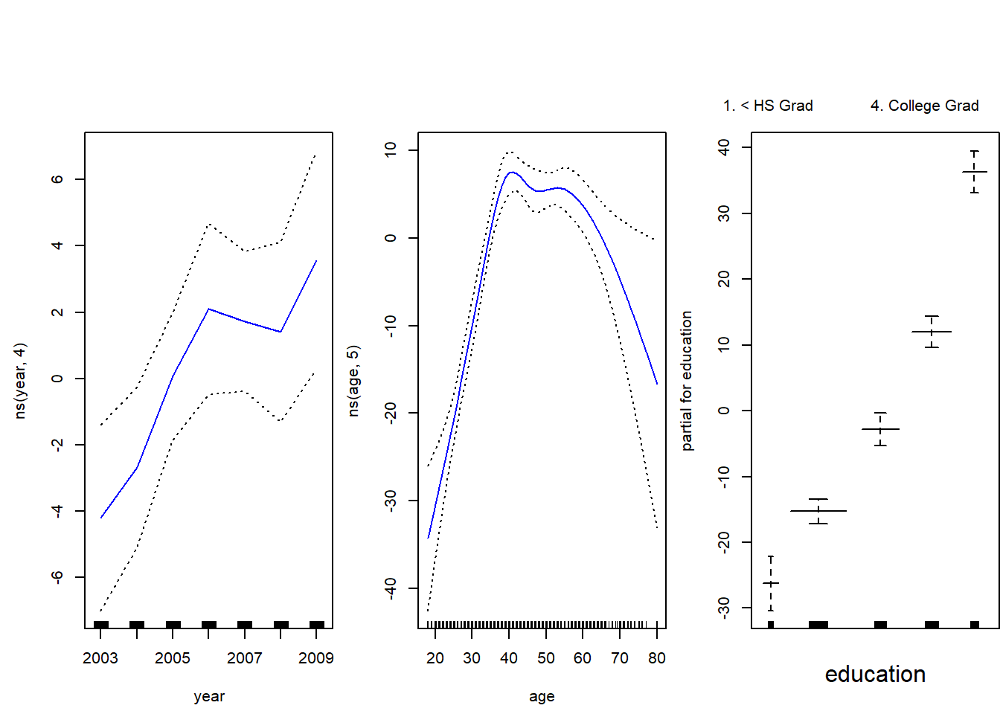
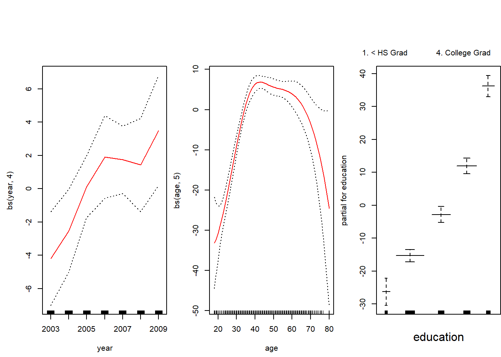
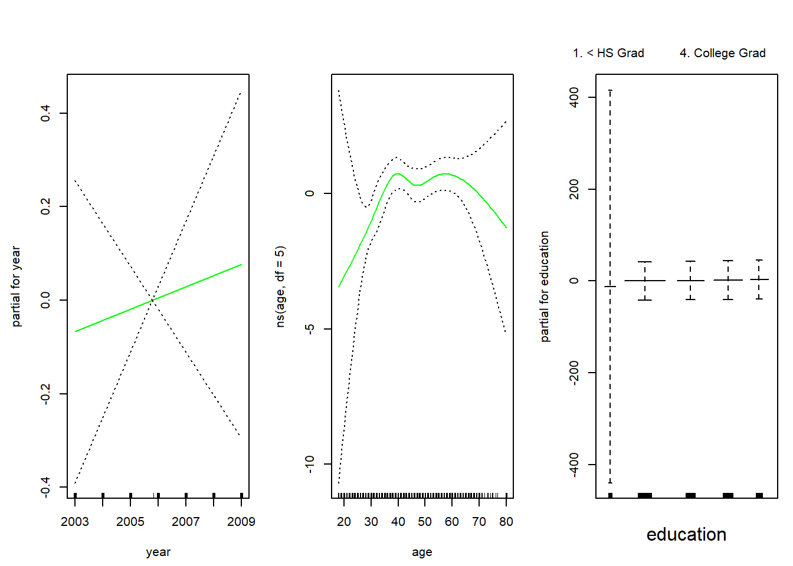
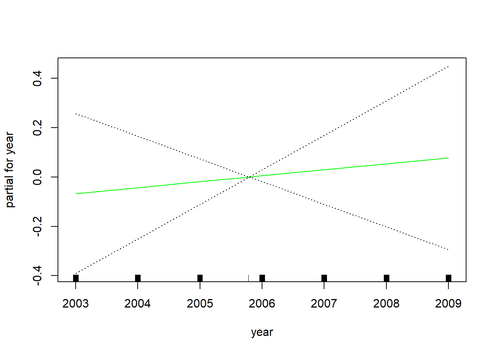

We begin by loading that ISLR package and attaching to the Wage dataset that we will be using throughout this exercise.
# clear workspace, load ISLR, attach wage data set
rm(list=ls())
library(ISLR)
attach(Wage)
?Wage # codebookLet’s fit a linear model to predict wage with a forth-degree polynomial using the poly() function.
# linear regression on wage, with age up to a 4th degree polynomial
fit <- lm(wage ~ poly(age, 4), data = Wage)
coef(summary(fit))## Estimate Std. Error t value Pr(>|t|)
## (Intercept) 111.70361 0.7287409 153.283015 0.000000e+00
## poly(age, 4)1 447.06785 39.9147851 11.200558 1.484604e-28
## poly(age, 4)2 -478.31581 39.9147851 -11.983424 2.355831e-32
## poly(age, 4)3 125.52169 39.9147851 3.144742 1.678622e-03
## poly(age, 4)4 -77.91118 39.9147851 -1.951938 5.103865e-02We can also obtain raw instead of orthogonal polynomials by passing the raw = TRUE argument to poly(). The coefficients will change the fit should be largely unaffected.
fit2 <- lm(wage ~ poly(age, 4, raw = TRUE), data = Wage)
coef(summary(fit2))## Estimate Std. Error t value
## (Intercept) -1.841542e+02 6.004038e+01 -3.067172
## poly(age, 4, raw = TRUE)1 2.124552e+01 5.886748e+00 3.609042
## poly(age, 4, raw = TRUE)2 -5.638593e-01 2.061083e-01 -2.735743
## poly(age, 4, raw = TRUE)3 6.810688e-03 3.065931e-03 2.221409
## poly(age, 4, raw = TRUE)4 -3.203830e-05 1.641359e-05 -1.951938
## Pr(>|t|)
## (Intercept) 0.0021802539
## poly(age, 4, raw = TRUE)1 0.0003123618
## poly(age, 4, raw = TRUE)2 0.0062606446
## poly(age, 4, raw = TRUE)3 0.0263977518
## poly(age, 4, raw = TRUE)4 0.0510386498There are several ways to specify polynomials. These are, however a little less convenient.
fit2a <- lm(wage ~ age + I(age^2) + I(age^3) + I(age^4), data = Wage)
coef(fit2a)## (Intercept) age I(age^2) I(age^3) I(age^4)
## -1.841542e+02 2.124552e+01 -5.638593e-01 6.810688e-03 -3.203830e-05A more compact version of the same example uses cbind() and eliminates the need to wrap each term in I(). The output is less readable though.
fit2b <- lm(wage ~ cbind(age, age^2, age^3, age^4), data = Wage)
coef(fit2b)## (Intercept) cbind(age, age^2, age^3, age^4)age
## -1.841542e+02 2.124552e+01
## cbind(age, age^2, age^3, age^4) cbind(age, age^2, age^3, age^4)
## -5.638593e-01 6.810688e-03
## cbind(age, age^2, age^3, age^4)
## -3.203830e-05We can create an age grid for the targeted values of the prediction and pass the grid to predict(). We can set the argument se=TRUE in the predict() function which will return a list that includes standard errors of the outcome. We can use these to an upper and lower bound of our estimate of \(y\).
# minimum and maximum values of age variable
agelims <- range(age)
age.grid <- seq(from = agelims[1], to = agelims[2])
# se=TRUE returns standard errors
preds <- predict(fit, newdata = list(age = age.grid), se = TRUE)
# confidence intervals as estimate + and - 2 standard deviations
se.bands <- cbind(preds$fit + 2 * preds$se.fit, preds$fit - 2 * preds$se.fit)We can plot the data and add the fit from the degree-4 polynomial. We set the margins and outer margins in our plot the later plot a title that will be the overall title for two plots that we plot next to each other. The function matlines() lets us draw the lines fo the uncertainty bounds in one go.
# set margins to plot title in margins
par(mfrow = c(1, 2), mar = c(4.5, 4.5, 1, 1), oma = c(0, 0, 4, 0))
plot(wage ~ jitter(age,2), xlim = agelims, cex = 0.5, col = "darkgrey", bty = "n",
xlab = "age")
# overall plot window title
title("Degree -4 Polynomial ", outer = TRUE)
# line for mean estimate
lines(age.grid, preds$fit, lwd = 2, col = "blue")
# ~95% ci's
matlines(age.grid, se.bands, lwd = 2, col = "blue", lty = 3)
We can compare the orthogonolized polynomials that we saved in the object called fit with the polynomials that plain polynomials sved in fit2. The difference will substantially \(0\). We predict the outcome from the fit with the raw polynomials and take the diffence to the fit with the independent linear combinations of the powers of age.
preds2 <- predict(fit2, newdata = list(age = age.grid), se = TRUE)
# average difference
mean(preds$fit - preds2$fit)## [1] -1.752311e-11# maximum difference
max(abs(preds$fit - preds2$fit))## [1] 7.81597e-11When we have only predictor variable and and its powers we use the coef() function to see whether the powers of the variable improve in-sample model fit.
fit.5 <- lm(wage ~ poly(age, 5), data = Wage)
coef(summary(fit.5))## Estimate Std. Error t value Pr(>|t|)
## (Intercept) 111.70361 0.7287647 153.2780243 0.000000e+00
## poly(age, 5)1 447.06785 39.9160847 11.2001930 1.491111e-28
## poly(age, 5)2 -478.31581 39.9160847 -11.9830341 2.367734e-32
## poly(age, 5)3 125.52169 39.9160847 3.1446392 1.679213e-03
## poly(age, 5)4 -77.91118 39.9160847 -1.9518743 5.104623e-02
## poly(age, 5)5 -35.81289 39.9160847 -0.8972045 3.696820e-01Preferably, we use the anova() and look at the F-test to decide whether in-sample fit improves by including powers of a variable.
fit.1 <- lm(wage ~ age, data = Wage)
fit.2 <- lm(wage ~ poly(age, 2), data = Wage)
fit.3 <- lm(wage ~ poly(age, 3), data = Wage)
fit.4 <- lm(wage ~ poly(age, 4), data = Wage)
anova(fit.1, fit.2, fit.3, fit.4, fit.5)## Analysis of Variance Table
##
## Model 1: wage ~ age
## Model 2: wage ~ poly(age, 2)
## Model 3: wage ~ poly(age, 3)
## Model 4: wage ~ poly(age, 4)
## Model 5: wage ~ poly(age, 5)
## Res.Df RSS Df Sum of Sq F Pr(>F)
## 1 2998 5022216
## 2 2997 4793430 1 228786 143.5931 < 2.2e-16 ***
## 3 2996 4777674 1 15756 9.8888 0.001679 **
## 4 2995 4771604 1 6070 3.8098 0.051046 .
## 5 2994 4770322 1 1283 0.8050 0.369682
## ---
## Signif. codes: 0 '***' 0.001 '**' 0.01 '*' 0.05 '.' 0.1 ' ' 1We prefer the F-test beacuse it works when we include additional predictors into our model.
# comparing models when other predictors are added
fit.1 <- lm(wage ~ education + age, data = Wage)
fit.2 <- lm(wage ~ education + poly(age, 2), data = Wage)
fit.3 <- lm(wage ~ education + poly(age, 3), data = Wage)
anova(fit.1, fit.2, fit.3)## Analysis of Variance Table
##
## Model 1: wage ~ education + age
## Model 2: wage ~ education + poly(age, 2)
## Model 3: wage ~ education + poly(age, 3)
## Res.Df RSS Df Sum of Sq F Pr(>F)
## 1 2994 3867992
## 2 2993 3725395 1 142597 114.6969 <2e-16 ***
## 3 2992 3719809 1 5587 4.4936 0.0341 *
## ---
## Signif. codes: 0 '***' 0.001 '**' 0.01 '*' 0.05 '.' 0.1 ' ' 1With glm() we can also fit a polynomial logistic regression. Here, we create a binary variable that is 1 if wage > 250 and 0 otherwise.
fit <- glm(I(wage > 250) ~ poly(age, 4), data = Wage, family = binomial)Similar to lm() we use the predict() function again and also obtain standard errors by setting se=TRUE.
Note: If we do not set type="response" in the predict() function, we get the latent \(y\) as \(X\beta\). We have to send those values through the link function to get predicted probabilities. We do this, so that we can estimate the standard errors on the latent \(y\). We then send these through the link function as well. This ensures that our confidence intervals will never be outside the logical \([0, 1]\) interval for probabilities.
# predict latent y
preds <- predict(fit, newdata = list(age = age.grid), se = TRUE)
# send latent y through the link function
pfit <- 1 / (1 + exp(-preds$fit))
# error bands calculate on the latent y
se.bands.logit <- cbind(preds$fit + 2 * preds$se.fit, preds$fit - 2 * preds$se.fit)
se.bands <- 1 / (1 + exp(-se.bands.logit))We add the results next to the plot where wage is continuous. With the points() function we add the actual data to the plot. The argument pch="|" draws a bar as the symbol for each point. Also notice the y-coordinate of each point. In the plot() function we set the range of the y-axis with ylim = c(0, 0.2) to range from \(0\) to \(0.2\). If the true outcome is \(1\) we want to draw the | at \(y=0.2\) and otherwhise at \(y=0\). We achieve this with I((wage > 250)/5). Play around to see why.
plot(I(wage > 250) ~ age, xlim = agelims, type = "n", ylim = c(0, 0.2))
# add data to the plot
points(jitter(age), I((wage > 250)/5) , cex = 1, pch = "|", col = " darkgrey ")
# mean estimate
lines(age.grid, pfit, lwd = 2, col = "blue")
# 95 ci
matlines(age.grid, se.bands, lwd = 2, col = "blue", lty = 3)
Notice, that the confidence interval becomes very large in the range of the data where we have few data and no \(1\)’s.
Instead of using polynomials to create a non-linear prediction, we could also use step functions. With step functions we fit different lines for different data ranges.
We use the cut() function to create equally spaced cutpoints in our data. We use the now categorical variable age as predictor in our linear model.
# four equally spaced intervals of age
table(cut(age, 4))##
## (17.9,33.5] (33.5,49] (49,64.5] (64.5,80.1]
## 750 1399 779 72# fit the linear regression with the factor variable age that has four categories
fit <- lm(wage ~ cut(age, 4), data = Wage)
# the first category is the baseline.
coef(summary(fit))## Estimate Std. Error t value Pr(>|t|)
## (Intercept) 94.158392 1.476069 63.789970 0.000000e+00
## cut(age, 4)(33.5,49] 24.053491 1.829431 13.148074 1.982315e-38
## cut(age, 4)(49,64.5] 23.664559 2.067958 11.443444 1.040750e-29
## cut(age, 4)(64.5,80.1] 7.640592 4.987424 1.531972 1.256350e-01We use the splines package to fit splines.
library(splines)We first use bs() to generate a basis matrix for a polynomial spline and fit a model with knots at age 25, 40 and 60. bs will by default fit a cubic spline with the specified number of knots. To deviate from a cubic spline, chanbe the argument degree to some other value.
fit <- lm(wage ~ bs(age, knots = c(25, 40, 60)), data = Wage)
pred <- predict(fit, newdata = list(age = age.grid), se = TRUE)
par( mfrow = c(1,1))
plot(jitter(age,2), wage, col = "gray", xlab = "age", bty = "n")
lines(age.grid, pred$fit, lwd = 2)
lines(age.grid, pred$fit + 2 * pred$se, lty = "dashed", lwd = 2)
lines(age.grid, pred$fit - 2 * pred$se, lty = "dashed", lwd = 2)
The confidence intervals are wide at the end of data range whree the curve is forced off into some direction by only a few observations.
Instead of specifying knots ourselves we can set the argument df (degrees of freedom) to some value to set knots at uniform intervals. A polynomial of the power of three uses up four degrees of freedom. One for each power. Where we to fit polynomials in regions of the data we woud use 4 degrees of freedom in each region. Fitting a cubic spline involves three predictors and an intercept = 4. In addition we use a degree of freedom at each knot.
dim( bs(age, knots = c(25, 40, 60)) )## [1] 3000 6dim(bs(age, df = 6))## [1] 3000 6attr(bs(age, df = 6), "knots")## 25% 50% 75%
## 33.75 42.00 51.00To address the problem of the wide error bands at the ends of the data range, we can fit natural splines. They impose linearity at the end of the range, are better behaved (produce narror error bands) and free up two degrees of freedom. One at each end. We ns() for natural splines.
plot(jitter(age,2), wage, col = "gray", bty = "n", xlab = "age")
fit2 <- lm(wage ~ ns(age, df = 4), data = Wage)
pred2 <- predict(fit2, newdata = list(age = age.grid), se = TRUE)
lines(age.grid, pred2$fit, col = "red", lwd = 2)
lines(age.grid, pred2$fit + 2 * pred$se, lty = "dashed", lwd = 2, col = "red")
lines(age.grid, pred2$fit - 2 * pred$se, lty = "dashed", lwd = 2, col = "red")
One can also account for non-linearity by using local regression. We estimate the regression curve only in the near neighborhood of the the current point. Smoothness is achieved by moving along the data range gradually whereby the intervals overlap. Like k-nearest neighbors local regression can does not work well in high dimensions (many predictors) because the distances between points become very large.
Here, wer use the loess() smoother for local regression. The argument span specifies the range of the data that is being used. The narrower the span the more flexible and wiggly the line will become.
plot(jitter(age,2), wage, xlim = agelims, cex = 0.5, col = "darkgrey", bty = "n", xlab = "age")
title(" Local Regression ")
fit <- loess(wage ~ age, span = 0.2, data = Wage)
fit2 <- loess(wage ~ age, span = 0.5, data = Wage)
lines(age.grid, predict(fit, data.frame(age = age.grid)), col = "red", lwd = 2)
lines(age.grid, predict(fit2, data.frame(age = age.grid)), col = "blue", lwd = 2)
legend("topright", legend = c("Span=0.2", "Span=0.5"), col = c("red", "blue"),
lty = 1, lwd = 2, cex = 0.8, bty = "n")
With GAMs we can flexibly combine the mehtods we introduced above for multible predictors.
For splines, we can fit a GAM with lm() when an appropriate basis functions can be used.
gam1 <- lm(wage ~ bs(year, 4) + bs(age, 5) + education, data = Wage)However, the gam package offers a general solution to fitting GAMs and is especially useful when splines cannot be easily expressed in terms of basis functions. Here, we fit natural splines on age and year. Something that could not easily be expressed as a basis function.
library(gam)
# gam with natural splines for year and age
gam.m3 <- gam(wage ~ ns(year, 4) + ns(age, 5) + education, data = Wage)We can use the plot() function as well as plot.gam() to plot our results. The difference between cubic splines and natural splines fit to age and education is very small.
par(mfrow = c(1, 3), mar = c(4.5, 4.5, 1, 1), oma = c(0, 0, 4, 0))
# plot function behaves similar to plot.gam
plot(gam.m3, se = TRUE, col = "blue")
title("Natural splines for age and education", outer = TRUE)
par(mfrow = c(1, 3), mar = c(4.5, 4.5, 1, 1), oma = c(0, 0, 4, 0))
plot.gam(gam1, se = TRUE, col = "red")
title("Cubic splines for age and education", outer = TRUE)
We can use anova() to find the best performing model.
gam.m1 <- gam(wage ~ ns(age, 5) + education, data = Wage)
gam.m2 <- gam(wage ~ year + ns(age, 5) + education, data = Wage)
anova(gam.m1, gam.m2, gam.m3, test = "F")## Analysis of Deviance Table
##
## Model 1: wage ~ ns(age, 5) + education
## Model 2: wage ~ year + ns(age, 5) + education
## Model 3: wage ~ ns(year, 4) + ns(age, 5) + education
## Resid. Df Resid. Dev Df Deviance F Pr(>F)
## 1 2990 3712881
## 2 2989 3694885 1 17996.1 14.5551 0.0001389 ***
## 3 2986 3691919 3 2966.4 0.7997 0.4938916
## ---
## Signif. codes: 0 '***' 0.001 '**' 0.01 '*' 0.05 '.' 0.1 ' ' 1We can see that looking at the summary() function would not have been enough to determine whether a natural spline on year is appropriate. The coeffiecient is highly significant. However, the F-test reveals that the model is not significantly better than the model without a natural spline for year.
summary(gam.m3)##
## Call: gam(formula = wage ~ ns(year, 4) + ns(age, 5) + education, data = Wage)
## Deviance Residuals:
## Min 1Q Median 3Q Max
## -120.513 -19.608 -3.583 14.112 214.535
##
## (Dispersion Parameter for gaussian family taken to be 1236.409)
##
## Null Deviance: 5222086 on 2999 degrees of freedom
## Residual Deviance: 3691919 on 2986 degrees of freedom
## AIC: 29889.5
##
## Number of Local Scoring Iterations: 2
##
## Anova for Parametric Effects
## Df Sum Sq Mean Sq F value Pr(>F)
## ns(year, 4) 4 25102 6275 5.0755 0.0004477 ***
## ns(age, 5) 5 453232 90646 73.3141 < 2.2e-16 ***
## education 4 1051834 262958 212.6791 < 2.2e-16 ***
## Residuals 2986 3691919 1236
## ---
## Signif. codes: 0 '***' 0.001 '**' 0.01 '*' 0.05 '.' 0.1 ' ' 1We can make predictions using predict() just as we did before.
preds <- predict(gam.m2, newdata = Wage)The gam() function also allows fitting logistic regression GAM with the family = binomial argument.
gam.lr <- gam(I(wage > 250) ~ year + ns(age, df = 5) + education, family = binomial, data = Wage)
par(mfrow = c(1, 3))
plot(gam.lr, se = TRUE, col = "green")
Looking at the education variable, we see that the first category has extremely wide error bands. We check a cross-table of education against the indicator of whether age > 250. We see that age > 250 is never true for lowest category.
table(education, I(wage > 250))##
## education FALSE TRUE
## 1. < HS Grad 268 0
## 2. HS Grad 966 5
## 3. Some College 643 7
## 4. College Grad 663 22
## 5. Advanced Degree 381 45Based on this we exclude the lowest education category from our model.
gam.lr.s <- gam(I(wage > 250) ~ year + ns(age, df = 5) + education, family = binomial, data = Wage, subset = (education != "1. < HS Grad"))
plot(gam.lr.s, se = TRUE, col = "green")
In this exercise, you will further analyze the Wage dataset coming with the ISLR package.
wage using age. Use cross-validation to select the optimal degree dd for the polynomial. What degree was chosen, and how does this compare to the results of hypothesis testing using ANOVA? Make a plot of the resulting polynomial fit to the data.wage using age, and perform cross-validation to choose the optimal number of cuts. Make a plot of the fit obtained.The Wage data set contains a number of other features that we haven’t yet covered, such as marital status (maritl), job class (jobclass), and others. Explore the relationships between some of these other predictors and wage, and use non-linear fitting techniques in order to fit flexible models to the data. Create plots of the results obtained, and write a summary of your findings.
This question uses the variables dis (the weighted mean of distances to five Boston employment centers) and nox (nitrogen oxides concentration in parts per 10 million) from the Boston data available as part of the MASS package. We will treat dis as the predictor and nox as the response.
poly() function to fit a cubic polynomial regression to predict nox using dis. Report the regression output, and plot the resulting data and polynomial fits.bs() function to fit a regression spline to predict nox using dis. Report the output for the fit using four degrees of freedom. How did you choose the knots? Plot the resulting fit.This question relates to the College dataset from the ISLR package.